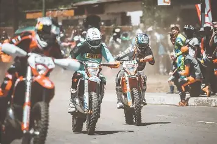

About Roof of Africa
History & Significance of Roof Of Africa

The event was founded in 1967 and originally began as a mixed-Vehicle rally featuring cars, motorcycles, and quads traversing the rugged landscape. Over time , it transitioned from a general endurance rally to a specialized hard enduro event, focusing on technical, low-speed, and high-difficulty riding. Mother of Hard Enduro, it is considered the ultimate test of endurance, requiring riders to navigate relentless, steep donkey tracks and riderbeds at altitudes exceeding 3000 meters.
Target Tourists
Welcome local visitors and international travelers who are primarily elite and amateur hard enduro motorcycle riders, adventure seekers, and motorsport fans.